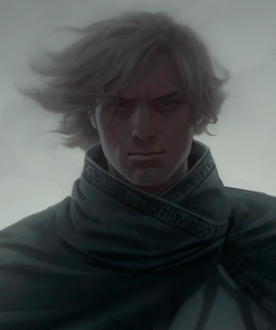
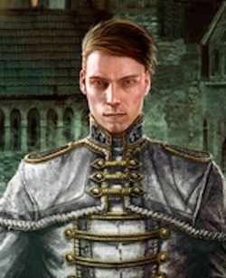
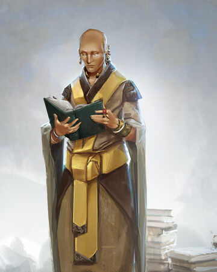

Vin es una nacida de la bruma mitad Skaa fruto del romance entre Tevidian Tekiel y una amante en el año
1005 del Imperio Final. Ella fue criada por su medio hermano Reen tras salvarla de su madre loca, la
cual había asesinado a su otra hermana. Los dos vivieron durante años en las calles y trabajaron como
ladrones, hasta que finalmente consiguieron ingresar a la Banda de Camon.
Con posterioridad Vin fue encontrada por Kelsier, quien la sumó a banda, la entrenó en la Alomancia y la
integró al plan para robarle al Lord Legislador. Durante el tiempo que paso infiltrada en la nobleza
bajo el alias de Valette Renoux ella conoció y se enamoró de Elend Venture, y luego de la muerte de
Kelsier fue capaz de enfrentarse y asesinar al Lord Legislador. Después del Colapso y unos cuantos meses
de incertidumbre sobre sí misma, ella se casó con Elend, combatió contra la Koloss durante el Asedio de
Luthadel, mató a Zane y Straff Venture, y se convirtió en la emperatriz del Nuevo Imperio. Sin embargo
fue manipulada para liberar a una entidad conocida como Ruina de su prisión en el Pozo de la Ascensión.
Meses más tarde Vin ayudó a consolidar el Nuevo Imperio de Elend mientras buscaban las cavernas de
almacenamiento del Lord Legislador. Tras participar en el Asedio de Fadrex, Vin se convirtió en la nueva
Conservación poco antes de la Batalla de Hathsin, donde ella finalmente se sacrificó para matar a Ruina.
En los siglos posteriores a la Ascensión Final, se convirtió en una figura mítica para los descendientes
de los supervivientes, siendo conocida como la Guerrero Ascendente.

Kelsier
Kelsier era un Nacido de la Bruma mitad Skaa originario de Scadrial. Él era severo e intenso, pero
siempre se mantenía sonriente como un acto de rebelión contra la opresión del Lord Legislador. Odiaba la
injusticia y llevó ese odio a tal extremo que originalmente le resultaba imposible reconocer alguna
clase de bien en alguien perteneciente a la nobleza. Sin embargo ese pensamiento cambió cuando Vin se
enamoró de Elend Venture y él le salvó la vida a manos de un Inquisidor. Su difunta esposa, Mare, solía
coleccionar recuerdos de la época previa a la Ascensión, por eso él guardó durante mucho tiempo el
dibujo de una flor, para inspirar a su banda y recordarles la clase de mundo por el cual estaban
luchando.
Kelsier fue el hermano menor de Marsh, el mentor de Vin, y con su sacrificio logró encender la llama de
la rebelión Skaa, que eventualmente terminó acabando con el Imperio Final. Tras su fallecimiento él
adquirió la fama de un dios, lo cual originó el nacimiento de una nueva religión conocida como Iglesia
del Superviviente.

Elend
Elend era el único hijo legítimo de Straff Venture y por consiguiente único heredero de la Casa Venture.
Cuando era un niño, su padre ordenó que lo golpearan casi hasta la muerte para determinar si él era un
alomántico o no. Cuando tenía trece años su padre lo obligó a perder la virginidad con una mujer Skaa en
un burdel para “convertirlo en un hombre de verdad". Sin embargo se horrorizó al descubrir que después
de eso la mujer fue ejecutada para evitar que diera a luz a niños mestizos. A medida que fue creciendo
Elend comenzó a desobedecer deliberadamente a su padre para fastidiarlo; optaba por ignorar a los
invitados en las fiestas y se mostraba distante con las prometidas que le seleccionaba.
Sin embargo Elend desarrollo una pasión por la erudición y dedicó su tiempo libre a estudiar diversas
disciplinas como política, filosofía e historia. Sus estudios lo convirtieron en un idealista que
disfrutaba reunirse con un grupo selecto amigos, entre los que estaban incluidos Jastes Lekal y Telden
Hasting, justo después de los bailes para discutir sobre filosofía y temas prohibidos en el Imperio
Final.

Sazed
Sazed nació en Terris y como la mayoría de sus pares fue educado desde el inicio para ser un criado. Fue
castrado poco después de nacer, algo común con todos aquellos destinados a ser mayordomos, como parte
del estricto control de reproducción impuesto por el Lord Legislador. Reusándose a ser un autómata
fabricado para cumplir los deseos del lord Legislador, él se unió a la secta de los Guardadores para
convertirse en un almacén de recuerdos con conocimientos que podían ser utilizados en el futuro, como
religiones o idiomas. Dado que el lord Legislador cazaba a los Guardadores con notable y confusa pasión,
Sazed decidió hacer algo para propiciar su derrocamiento y liberar las ataduras contra su pueblo, sin
embargo sus ideas radicales le otorgaron el mote de rebelde entre los terrisanos.
En el algún momento de su vida él conoció a Kelsier y su esposa Mare, un par de ladrones de Luthadel con
los cuales congenió de inmediato. Luego de que Kelsier escapó de los Pozos de Hathsin y comenzó a
planear el derrocamiento del Lord Legislador, Sazed no dudó en unirse a su causa.